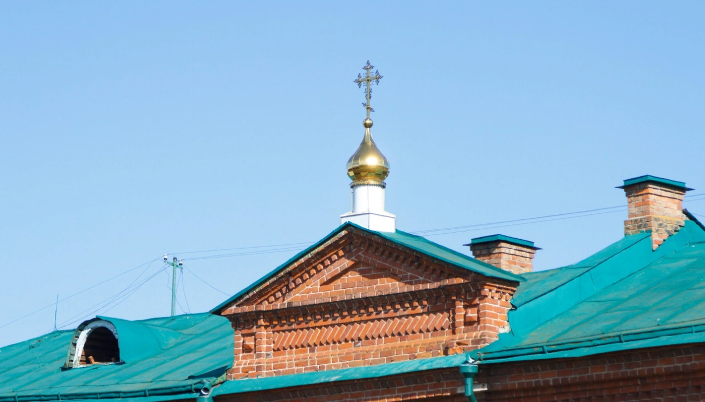

БОГОСЛУЖЕНИЯ В НЕДЕЛЮ 32 ПО ПЯТИДЕСЯТНИЦЕ.
29 января, в Неделю 33-ю по Пятидесятнице, Поклонение честны́м веригам святого и всехвального апостола Петра, иерей Владимир Маняков совершил Божественную литургию, общий молебен и заупокойную литию в храме Сошествия Святого Духа на Апостолов в Ульяновске.Настоятелю сослужил иерей Стахий Таллеров.Накануне вечером духовенство совершило Всенощное бдение.